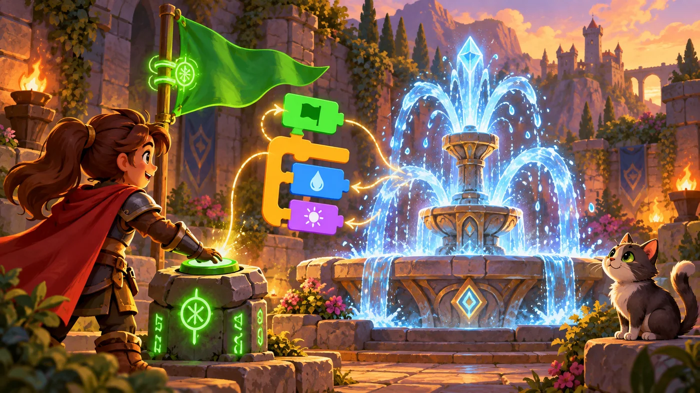
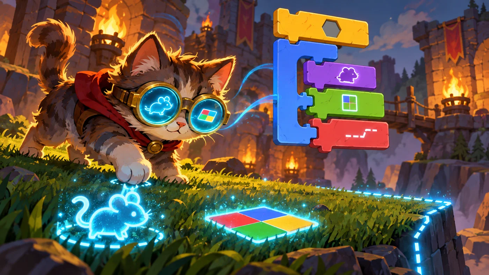

扣哒考级 · GESP 图形化 一级 · 第 4 单元 | 积木花园 BLOCKBLOOM GARDEN
会听懂话的喷泉 事件触发与侦测
Events and Sensing

安雅
红发队长 · 你的旅伴
花径尽头有一眼喷泉。泉眼上刻着一行小字：只在有人升起旗帜时喷涌。
安雅把绿旗递给你。你一举起来，水柱"哗"地冲上天空；你一松手，它立刻安静下来。
"看见没有？"她说，"程序不会自己开始，它需要一个开关。这个开关，就叫事件。"
安雅把绿旗递给你。你一举起来，水柱"哗"地冲上天空；你一松手，它立刻安静下来。
"看见没有？"她说，"程序不会自己开始，它需要一个开关。这个开关，就叫事件。"
安雅 · 红发队长
这一单元要分清两样东西：事件是"什么时候开始做"，侦测是"看见了什么"。卷子上最爱把它们混在一起考：给你一句描述，问"该用事件还是侦测"——只要你记得 "事件管开关、侦测管判断"，就错不了。

assets/illustrations/scratch-L1-04-01_fountain_events.webp
【配图位】魔法花园喷泉只在升起绿旗或被按下按钮时才喷水，周围浮着几枚发光触发符文，小猫在旁等待。（提示词见《GESP配图清单与AI绘图提示词》第四节 1-4）
0 单元导语与目标
Before We Start
0.1 学习目标
- 理解事件是什么：脚本被"叫醒"的那一瞬间；
- 掌握三种最常见的触发方式：点绿旗、点角色、按下键盘；
- 会用侦测积木判断"碰到了什么""按下了什么"；
- 会把侦测积木塞进"如果……那么"里，做出"碰到就做事"的效果；
- 知道一个作品里可以有好几段脚本同时运行。
0.2 考纲对照
| 考纲知识块 | 考纲要求 | 本单元小节 |
|---|---|---|
| 5 事件触发 | 事件的基本概念，点击运行、当角色被点击、键盘被按下等 | 1.1～1.3 |
| 8 侦测与控制 | 碰到鼠标指针 / 舞台边缘 / 颜色，按下键盘 / 鼠标，停止脚本 | 2.1～2.3、3.1～3.3 |
| 6 角色的操作（多角色） | 掌握多角色设置，初步理解并发程序 | 4.1、4.2 |
这一单元是"让作品活起来"的关键——事件管"什么时候做"，侦测管"看见了什么"。
1 事件：谁把脚本叫醒
Events
1.1 当绿旗被点击
花园深处有一眼魔法喷泉。它不会自己喷水——得有人升起绿旗，它才开始工作。
重点示例：最常用的开场白
图形化积木
读法 舞台上那面绿旗一被点击，下面扣着的积木就开始执行
打个比方：脚本像一台放在桌上的机器，插头还没插。事件就是那个插座——"当绿旗被点击"表示"有人按下开关时才通电"。没有事件块，机器再漂亮也不会转。
1.2 当角色被点击
除了绿旗，还可以让角色自己当开关：直接点一下舞台上的它。
重点示例：点谁，谁答应
图形化积木
要点 这块积木只认"它自己被点"——点别的角色不会触发它
1.3 当按下某个键
第三种开关在键盘上：按下指定的按键，脚本就开始执行。常见的有空格、方向键和字母键。
重点示例：用键盘当遥控器
图形化积木
按下右方向键就往右走
按下左方向键就往左走
要点 同一段脚本可以只响应一个键；想支持四个方向，就写四段脚本，每段配一个按键
三种事件，一句话分清：当绿旗被点击——开演；当角色被点击——被点名；当按下某键——听见指令。它们都是黄色的事件积木，都只能放在一段脚本的最上面。
2 侦测：角色长出了眼睛
Sensing
2.1 碰到鼠标与边缘
安雅给喷泉挂上一副魔法眼镜。有了它，角色能"看见"三样东西：鼠标指针、舞台边缘、还有颜色。
重点示例：三块最常用的侦测积木
图形化积木
读法 前两块是六边形的"判断"，结果只有"成立"或"不成立"；第三块是一个数，告诉你离得多远
打个比方：侦测积木就是角色的眼睛和耳朵。它只负责看和听，不负责做事——看见之后要做什么，得靠"如果……那么"或"重复执行直到"来接。

assets/illustrations/scratch-L1-04-02_sense_stones.webp
【配图位】小猫戴上魔法眼镜，能看见隐形的标记——鼠标指针、色块与舞台边缘线，标记在草地上发光。（提示词见《GESP配图清单与AI绘图提示词》第四节 1-4）
2.2 碰到颜色
"碰到颜色？"是图形化编程里最好玩的一块：你能指定一种颜色，让角色去"摸"它。
重点示例：让角色沿着黑线走
图形化积木
要点 把颜色方块点开可以吸取屏幕上的任意一种颜色；常用来做"沿着黑线前进""碰到红墙就停"这类效果
2.3 按下键与鼠标按下
重点示例：侦测键盘和鼠标
图形化积木
要点 "按下……键？"问的是"此刻这个键是不是被按着"；"按下鼠标？"判断的是鼠标左键
别把两件事搞混：事件里的"当按下空格键"是一次性的触发——按一下启动一次；
侦测里的"按下空格键？"是持续的判断——只要还按着，它就一直成立。
侦测里的"按下空格键？"是持续的判断——只要还按着，它就一直成立。
3 侦测积木怎么用
Using the Sensing Blocks
3.1 六边形要插进六边形的槽
还记得第 2 单元说过的那条规则吗？形状决定能不能扣。 侦测积木是六边形的，所以它只有两个去处：
图 1（SVG）：六边形积木的两个去处
3.2 放进如果……那么
重点示例：碰到喷泉就说话
图形化积木
读法 一直检查"碰到鼠标指针吗"——碰到了就说一句话、变一次色；没碰到就什么都不做，继续检查
3.3 停止脚本
作品跑起来之后，总得能停下来。控制分类里有三块"停止"积木：
图 2（SVG）：三块停止积木
重点示例：碰到边缘就收工
图形化积木
要点 "重复执行直到"会一直转，一转就检查一次条件；条件成立才跳出循环，接着执行下面的"停止"
4 一个作品里的好几段脚本
Several Scripts at Once
4.1 每个角色各有一份脚本
回到"多角色"这件事。图形化编程里最反直觉、也最重要的一点是：
图 3（SVG）：脚本属于角色
4.2 同时开工：并发
点一下绿旗，会发生什么？所有角色身上所有"当绿旗被点击"的脚本，一起开始跑。 这就是考纲里说的"并发程序"。
重点示例：两个角色同时开工
图形化积木
角色 A：一边走一边变色
角色 B：原地打转
要点 两段脚本谁也不用等谁，绿旗一点就同时开工——它们的积木会交替着执行
并发最直观的例子：一个角色负责"走路"，另一个角色负责"说话"。如果写成一段脚本，就得先走完再说话；分成两个角色，就能边走边说。
5 代码实战
Level Practice
这一关第一次出现"绕路"：前面明明有东西挡着，你得先看、再决定怎么走。 这就是侦测的用武之地。
关卡 16
绕行
进入关卡 →
故事：
花园主路被一块大石头挡住了。硬撞是撞不过去的——你要先看清楚挡在哪儿，
然后绕开它：先往上走两步，再往右走三步，最后往下走两步，回到主路上。
思路：把绕路拆成三段：上 2、右 3、下 2。每一段都是一次"面向 + 移动"。 等你学会"如果……那么"之后，这段路还能写得更聪明——让角色自己判断要不要绕。
重点示例：先看清，再绕开
图形化积木
读法 先用侦测"看一眼"有没有障碍，再按三段路线绕过去
自己试一试：把侦测积木换成"碰到舞台边缘？"，判断就变成了"有没有撞墙"。想一想：如果要先向右绕呢？把三段的顺序换一下试试。
这一关真正要记住的是：侦测积木本身不做事，它只回答"是"或"不是"。 真正做事的是套在外面的"如果……那么"。
回头看看第 3 单元：当时我们只会闷头往前走。现在有了侦测，角色才算真正"长出了眼睛"——下一关我们会用这个能力做更复杂的事。
去扣哒世界闯这一关 →
6 常见陷阱
Common Traps
陷阱 1：把帽子块放在脚本中间。事件积木顶上是弧形的，只能放在最上面。
正确做法：一段脚本只能有一个开头；要在别的事件里做事，就得新写一段脚本。
正确做法：一段脚本只能有一个开头；要在别的事件里做事，就得新写一段脚本。
陷阱 2：把侦测积木直接扣在脚本里。六边形积木下面没有凹槽，接不上下一块积木，单独放着也不会被执行。
正确做法：把侦测积木插进"如果……那么"或"重复执行直到"的六边形槽里。
正确做法：把侦测积木插进"如果……那么"或"重复执行直到"的六边形槽里。
陷阱 3：把"当按下空格键"和"按下空格键？"当成一回事。前者是事件（按一下触发一次），后者是侦测（按着就一直成立）。
怎么选：要"按一下做一次"用事件；要"按住不放持续做"用侦测。
怎么选：要"按一下做一次"用事件；要"按住不放持续做"用侦测。
陷阱 4：以为"停止这个脚本"会把所有角色都停下。它只管自己这一段。
正确做法：要让整个作品都停下来，用停止全部脚本——它的效果和点红色停止按钮一样。
正确做法：要让整个作品都停下来，用停止全部脚本——它的效果和点红色停止按钮一样。
7 题目练习
Practice
第 1 题改编自 2026 年 9 月 · 图形化编程 一级 第 8 题，其余为原创练习题。
改编自 2026 年 9 月 · 图形化编程 一 级 · 第 8 题单选题
角色身上有两段脚本：一段让它"一直移到鼠标指针"，另一段在"重复执行"里判断"如果碰到橙色区域，就播放声音喵"。
关于执行后的现象，下面说法正确的是（ ）。
关于执行后的现象，下面说法正确的是（ ）。
A.角色只移动一次，始终不会播放声音
B.角色移到 (0, 0) 后就停在原地，并一直播放声音
C.角色不断跟随鼠标移动，只有当鼠标指针碰到橙色区域时才播放声音
D.角色一直跟随鼠标移动，始终不会播放声音
B.角色移到 (0, 0) 后就停在原地，并一直播放声音
C.角色不断跟随鼠标移动，只有当鼠标指针碰到橙色区域时才播放声音
D.角色一直跟随鼠标移动，始终不会播放声音
查看答案与详解
答案：C。"一直移到鼠标指针"放在循环里，所以角色的位置会不断跟着鼠标跑；
"如果碰到橙色……那么播放声音"也放在循环里，所以每一轮都会检查一次颜色——碰到了才响，没碰到就不响。
A 错：循环里的动作会反复执行，不是只做一次；
B 错：角色跟的是鼠标，不会停在原点；
D 错：只要鼠标移到橙色区域上，声音就会响。
要点："循环 + 判断"的组合，就是"一遍遍检查"。
对应小节3.1、3.2 侦测积木放进循环里。
"如果碰到橙色……那么播放声音"也放在循环里，所以每一轮都会检查一次颜色——碰到了才响，没碰到就不响。
A 错：循环里的动作会反复执行，不是只做一次；
B 错：角色跟的是鼠标，不会停在原点；
D 错：只要鼠标移到橙色区域上，声音就会响。
要点："循环 + 判断"的组合，就是"一遍遍检查"。
对应小节3.1、3.2 侦测积木放进循环里。
原创练习题单选题
花园喷泉只有在"绿旗被点击"时才喷水。要让它在被鼠标点一下时也喷水，应该把哪一块积木放在脚本最上面（ ）。
A.当绿旗被点击
B.当角色被点击
C.当按下空格键
D.移动 10 步
B.当角色被点击
C.当按下空格键
D.移动 10 步
查看答案与详解
答案：B。"当角色被点击"这块帽子块的效果就是"用鼠标点一下这个角色，脚本就开始执行"。
A 错：那要等到有人升起绿旗；
C 错：那要用键盘按键触发；
D 错："移动 10 步"是运动积木，不是事件块，也不能放在最上面当开头的帽子块。
对应小节1.2 当角色被点击。
A 错：那要等到有人升起绿旗；
C 错：那要用键盘按键触发；
D 错："移动 10 步"是运动积木，不是事件块，也不能放在最上面当开头的帽子块。
对应小节1.2 当角色被点击。
原创练习题单选题
角色身上挂着一张"碰到鼠标指针？"的积木。它单独放在脚本区里，点绿旗后会发生什么（ ）。
A.角色会一直跟着鼠标跑
B.什么也不会发生
C.角色会隐藏起来
D.程序会报错
B.什么也不会发生
C.角色会隐藏起来
D.程序会报错
查看答案与详解
答案：B。六边形积木只回答"是或不是"，它没有接到任何事件块上、也不是一段脚本，放着不会被执行。
A 错：要跟着鼠标跑，得把这块积木塞进循环里的"如果……那么"，再做"移到鼠标指针"的动作；
C、D 错：图形化编程里积木不会因为摆错位置就报错，只是不执行而已。
对应小节3.1、3.2 侦测积木要用在判断里。
A 错：要跟着鼠标跑，得把这块积木塞进循环里的"如果……那么"，再做"移到鼠标指针"的动作；
C、D 错：图形化编程里积木不会因为摆错位置就报错，只是不执行而已。
对应小节3.1、3.2 侦测积木要用在判断里。
原创练习题单选题
在图形化编程中，要让角色一直执行"如果碰到边缘就停下"，下面哪种做法最合适（ ）。
A.把"如果……那么"单独放在脚本区
B.用"重复执行"把"如果……那么"套起来
C.把"碰到舞台边缘？"直接扣在帽子块下面
D.把"如果……那么"放在帽子块上面
B.用"重复执行"把"如果……那么"套起来
C.把"碰到舞台边缘？"直接扣在帽子块下面
D.把"如果……那么"放在帽子块上面
查看答案与详解
答案：B。"一直做"要靠循环，“这件事要不要做”靠判断——把判断套进循环里，就得到"一直检查"。
A 错：不放进脚本、不接到事件块上，就不会执行；
C 错：六边形积木接不上帽子块（形状不匹配）；
D 错：帽子块必须是最上面那一块，不能有东西压在它上面。
对应小节3.2 放进如果……那么；1.1 帽子块的位置。
A 错：不放进脚本、不接到事件块上，就不会执行；
C 错：六边形积木接不上帽子块（形状不匹配）；
D 错：帽子块必须是最上面那一块，不能有东西压在它上面。
对应小节3.2 放进如果……那么；1.1 帽子块的位置。
原创练习题多选题
下面哪些属于事件积木（ ）。
A.当绿旗被点击
B.当角色被点击
C.当按下空格键
D.碰到鼠标指针？
B.当角色被点击
C.当按下空格键
D.碰到鼠标指针？
查看答案与详解
答案：A、B、C。这三块都是黄色的事件积木，都是"什么情况下开始执行"的开关。
D 错："碰到鼠标指针？"是侦测积木，只负责判断，不能当开关用。
小技巧：事件块是黄色的、顶上有弧度；侦测块是浅蓝色的、六边形。
对应小节1.1～1.3 三种事件；2.1 侦测积木。
D 错："碰到鼠标指针？"是侦测积木，只负责判断，不能当开关用。
小技巧：事件块是黄色的、顶上有弧度；侦测块是浅蓝色的、六边形。
对应小节1.1～1.3 三种事件；2.1 侦测积木。
原创练习题判断题
在图形化编程中，按下绿旗后，只有"当前选中"的那个角色的脚本会执行。（ ）
查看答案与详解
答案：错误（×）。绿旗管的是整个作品——所有角色身上所有"当绿旗被点击"的脚本会同时开始执行。
"当前选中"只影响你看得见谁的脚本，不影响谁被执行。
对应小节4.2 同时开工：并发。
"当前选中"只影响你看得见谁的脚本，不影响谁被执行。
对应小节4.2 同时开工：并发。
8 本单元小结
Unit Summary

塔林 · 花园的守门人
今天给角色装上了耳朵和眼睛：事件让它被叫醒，侦测让它能看见。
再记住一句口诀——侦测只回答是或不是，做事交给如果……那么。
你在喷泉边学到了什么
- 三种事件：当绿旗被点击、当角色被点击、当按下某个键；
- 侦测积木：碰到鼠标指针 / 边缘 / 颜色、按下某键、按下鼠标、鼠标坐标；
- 怎么用：六边形只能插进六边形的槽——"如果……那么"或"重复执行直到"；
- 停止脚本：停止全部脚本 / 停止这个脚本，管的范围不一样；
- 并发：点一次绿旗，所有角色的脚本一起开工。
下一站：排队浇水
现在角色会走、会听、会看，可它做事还是"想到哪做到哪"。 下一单元我们要教它按顺序办事——先做什么、后做什么，一步都不能乱。